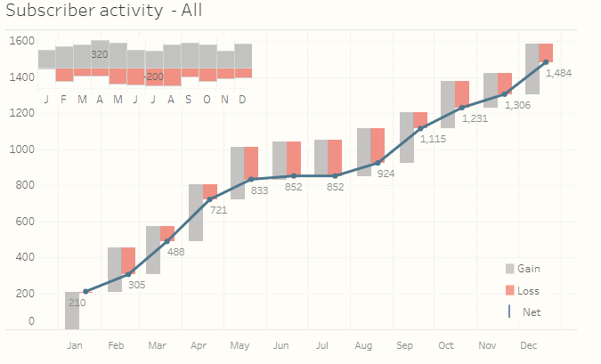

Tác giả: Hoàng Đức Anh | 2019-02-25
Trong thế giới công nghệ ngày nay, chỉ số active user là một trong những chỉ số rất quan trọng để thể hiện được hoạt động của một website/app theo thời gian. Active user tại thời điểm t có thể được tính toán như sau.
\[active_{t} = active_{t-1} + new_{t} - churn_{t}\]
Một cách hết sức tự nhiên, biểu đồ water-fall sẽ là biểu đồ được chọn để thể hiện chỉ số quan trọng này. Một trong những case-study điển hình để thể hiện chỉ số này là ví dụ trực quan hóa của Tableau nhu sau.

Đường link gốc của biểu đồ trên có thể tìm thấy tại đường link dưới đây.
https://public.tableau.com/views/CH24_BBOD_ChurnTurnover/SubscriberChurnAnalysis
Trong bài viết này, RAnalytics sẽ hướng dẫn các bạn cách xây dựng biểu đồ trên với GGPLOT2..
Tạo dữ liệu
Trước tiên, ta sẽ tạo dữ liệu giả lập để xây dựng biểu đồ như sau.
# Load library
library(tidyverse)
library(ggplot2)
library(reshape2)
library(lubridate)
library(grid)
library(gridExtra)
# Tạo data
set.seed(123)
data <- data.frame(date = seq(1, 372, by = 31) %>% as_date)
data <- data %>%
mutate(new = abs(rnorm(12, 100, 10)) %>% round(0)) %>%
mutate(churn = abs(rnorm(12, 50, 30)) %>% round(0)) %>%
mutate(net = new - churn) %>%
mutate(eop = cumsum(net)) %>%
select(-net)
data## date new churn eop
## 1 1970-01-02 94 62 32
## 2 1970-02-02 98 53 77
## 3 1970-03-05 116 33 160
## 4 1970-04-05 101 104 157
## 5 1970-05-06 101 65 193
## 6 1970-06-06 117 9 301
## 7 1970-07-07 105 71 335
## 8 1970-08-07 87 36 386
## 9 1970-09-07 93 18 461
## 10 1970-10-08 96 43 514
## 11 1970-11-08 112 19 607
## 12 1970-12-09 104 28 683Xây dựng biểu đồ
Để tạo biểu đồ water-fall, ta sẽ sử dụng geom_segment từ ggplot2.
# Xac định độ rộng cho mỗi segment
step <- 0.4*(max(data$date) - min(data$date))/(nrow(data) - 1)
# Xác định ymax cho mỗi
data <- data %>%
mutate(ymax = eop + churn)
# Xác định ymin chô mỗi segment
df <- data %>%
melt(id.vars = c("date", "eop", "ymax")) %>%
mutate(ymin = ymax - value) %>%
rename(group = variable)
# Xác định min, max
df <- df %>%
mutate(xmin = case_when(
group == "new" ~ date - step,
TRUE ~ date
)) %>%
mutate(xmax = case_when(
group == "new" ~ date,
TRUE ~ date + step
))
# Tạo biểu đồ
df %>%
arrange(date) %>%
ggplot() +
geom_rect(aes(xmin = xmin,
xmax = xmax,
ymin = ymin,
ymax = ymax,
fill = group)) -> p1
p1Như vây, ta đã tạo thành công biểu đồ đầu tiên. Sau đây, ta sẽ tối ưu hóa màu sắc và tạo thêm line-chart cho biểu đồ vừa tạo.
# Tạo data
df2 <- df %>% select(date, eop) %>% distinct()
# Tối ưu hóa màu sắc và tạo thêm biểu đồ dây
p2 <- p1 +
geom_line(aes(date, eop), col = "dodgerblue4", size = 1) +
geom_point(aes(date, eop), col = "dodgerblue4", size = 2.5) +
geom_text(aes(date, eop, label = eop), vjust = 1.2,
hjust = -0.1) +
scale_fill_manual(values = c("grey60", "coral2")) +
theme_minimal() +
theme(
axis.line = element_line(color = "gray40", size = 0.5),
legend.position = "top") +
scale_x_date(breaks = data$date,
date_labels = "%b") +
theme(panel.grid.minor.x = element_blank(),
legend.title = element_blank()) +
ggtitle("Overview of active users") +
xlab("Date") +
ylab("Number of active users")
p2Nhưu vậy, bây giờ ta chỉ cần tạo thêm biểu đồ phụ với geom_barnhư sau.
p3 <- df %>%
mutate(value = case_when(
group == "churn" ~ -1 * value,
TRUE ~ value
)) %>%
ggplot(aes(date, value)) +
geom_bar(aes(fill = group), stat = "identity") +
scale_fill_manual(values = c("grey60", "coral2")) +
theme_minimal() +
theme(
legend.position = "none",
axis.title.x = element_blank(),
axis.title.y = element_blank(),
axis.ticks.y = element_blank(),
axis.text.y = element_blank(),
panel.grid.minor = element_blank(),
panel.grid.major = element_blank(),
axis.text.x = element_text(angle = 90)
) +
scale_x_date(breaks = data$date,
date_labels = "%b")
p3
Cuối cùng, ta kết hợp hai biểu đồ trên với packages grid & gridExtra!
grid.newpage()
# Xác định vị trí cho chart chính
position_1 <- viewport(width = 1, height = 1, x = 0.5, y = 0.5) # the larger map
# Xác định vị trí cho chart phụ
position_2 <- viewport(width = 0.35, height = 0.25, x = 0.25, y = 0.75)
print(p2, vp = position_1)
print(p3, vp = position_2)Như vậy, chúng ta đã vừa tái hiện thành công biểu đồ water-fall chart rất chuyên nghiệp từ tableau với ggplot2. Chúc các bạn học tập và làm việc hiệu quả với Ranalytics.vn!